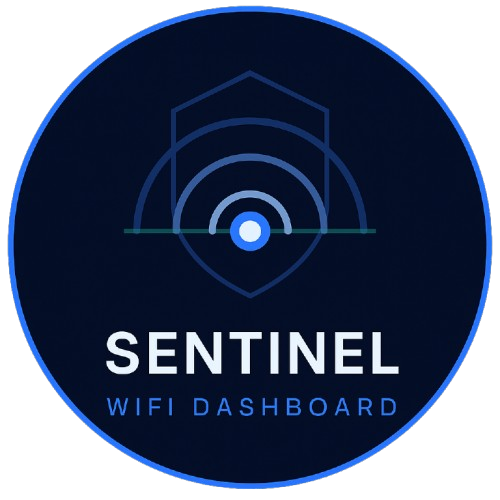
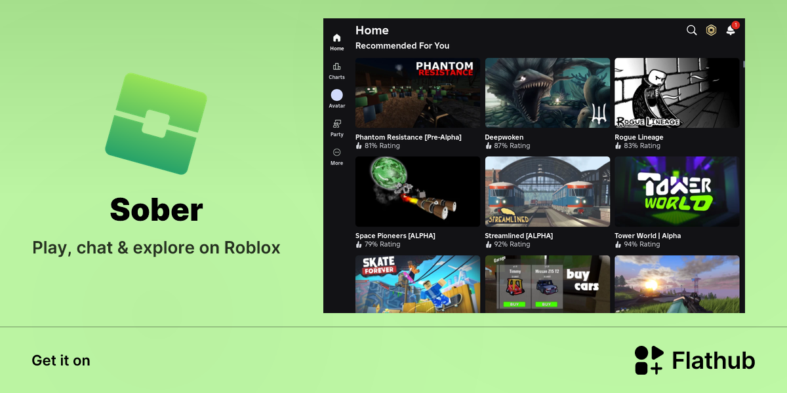
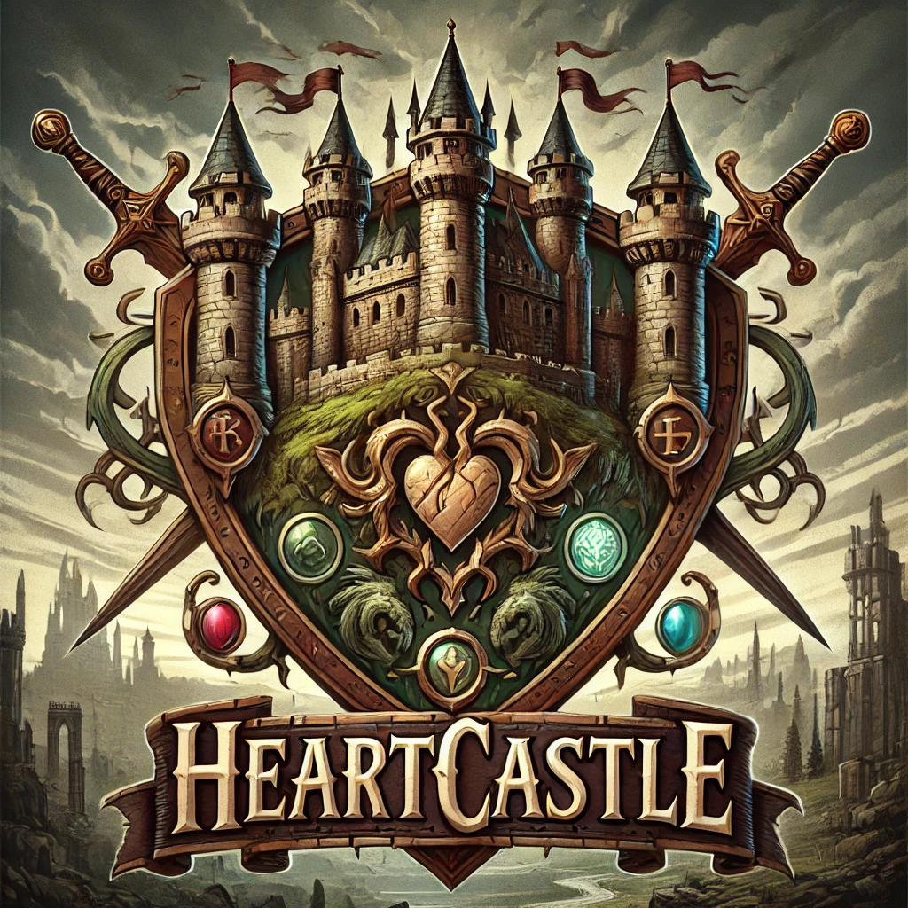

01 / Desktop application
SENTINEL
A released Electron project, built as part of my exploration of desktop software and practical development.
ElectronHTML / CSS

I’m Miguel Ângelo — a developer who enjoys creative coding, automation, games, and open source. From Electron apps to game systems and Linux tooling, I turn curious ideas into working projects.
Selected work
01 / Desktop application
A released Electron project, built as part of my exploration of desktop software and practical development.

02 / Linux customization
Replace Roblox fonts in Sober with custom fonts using a lightweight asset overlay.

03 / Game development
A completed game project — one of the systems that shaped my interest in making interactive worlds.

My toolkit
A little about me
Want to say hello?
For questions, ideas, or anything worth sharing, send me an email.
miguellomcostta@icloud.com